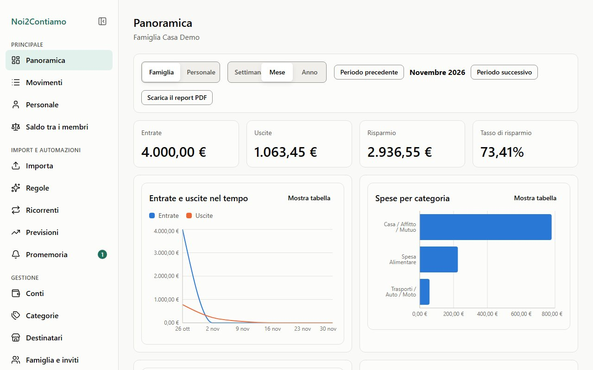
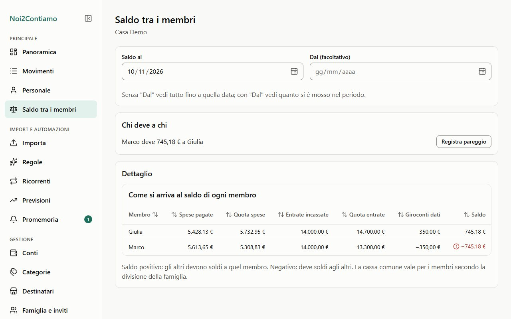
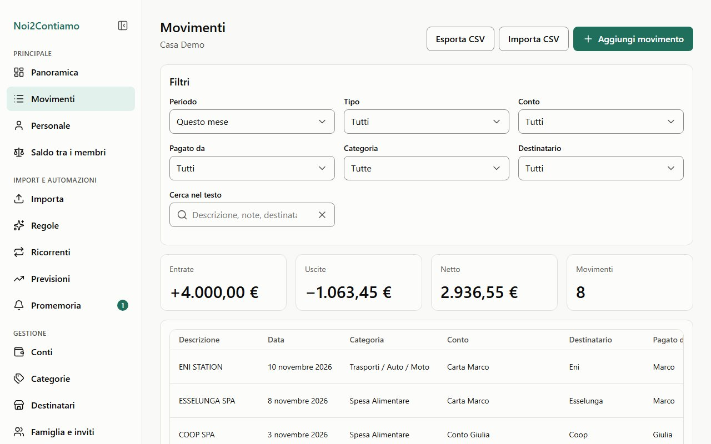
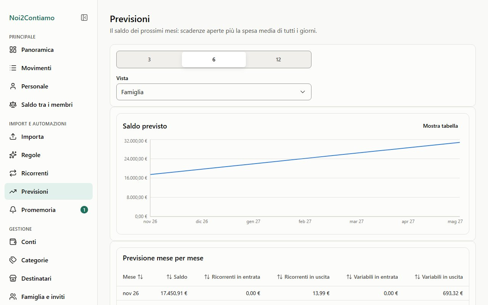
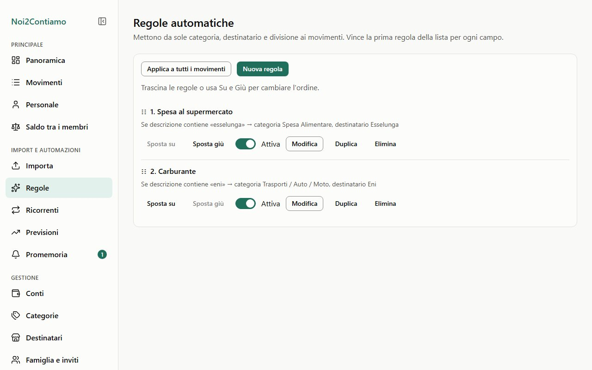
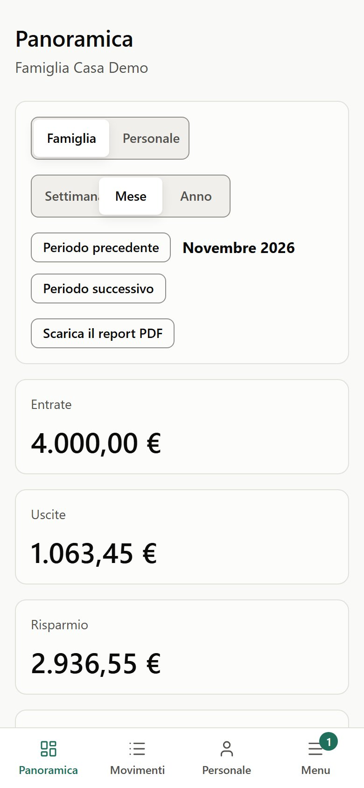
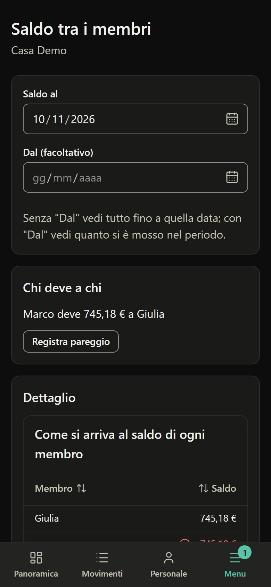

Spese divise
50/50 o le quote che volete, per famiglia, per categoria o per singolo movimento.
Open source · self hosted · senza abbonamenti
Noi2Contiamo tiene la contabilità di coppia e di famiglia: ognuno registra o importa i propri movimenti, le spese si dividono da sole e in ogni momento sai chi deve quanto a chi. Gira sul tuo computer, in Docker o sul piano gratuito di Firebase, e i dati restano tuoi.
La demo gira nel browser con dati inventati: niente account, niente installazione.

Pensata per una coppia o una famiglia italiana: conti condivisi e personali, spese divise, estratti conto delle banche, scadenze che tornano ogni mese.
50/50 o le quote che volete, per famiglia, per categoria o per singolo movimento.
Il saldo tra i membri, con il dettaglio di come ci si arriva e il pareggio in un clic.
CSV di Intesa, PayPal, Revolut, Satispay e simili, con profili salvati e controllo dei doppioni.
"ESSELUNGA" diventa Spesa alimentare da sola. Anteprima prima di applicare una regola.
Affitto, bollette, abbonamenti: le scadenze aperte e il saldo previsto dei prossimi mesi.
Un conto o un movimento privato lo vede solo chi lo possiede, anche dentro la famiglia.
Panoramica di coppia, area personale, confronto tra periodi, export CSV e report PDF.
Nell'app e come notifiche del browser; con il server Python anche via email e Telegram.
È l'app vera, con la famiglia inventata "Casa Demo": Giulia e Marco, quattro conti e sei mesi di movimenti. Puoi aggiungere spese, cambiare le divisioni e registrare un pareggio. Tutto resta nel tuo browser e si azzera ricaricando.
Si vede meglio a schermo intero:
apri la demo in una nuova scheda. Per rientrare dopo
"Esci": giulia.demo@example.com oppure marco.demo@example.com, password
demo-password-2026.






È una PWA: si aggiunge alla schermata Home e si apre a tutto schermo. Tema chiaro e scuro secondo il sistema, testi grandi, interfaccia accessibile (WCAG AA).
Stessa interfaccia in tutti e tre i casi: scegli in base a dove vuoi tenere i dati.
git clone https://github.com/Mattemn97/noi2contiamo
cd noi2contiamo
npm install
node scripts/uv.mjs sync --project server
npm run localPoi apri http://localhost:8000. Il database si crea da solo.
cp .env.example .env
# metti un segreto in N2C_SECRET_KEY
docker compose up -d --buildI dati stanno nel volume n2c-data: fai il backup di quello.
cp .env.example .env
cp .firebaserc.example .firebaserc
# configurazione della web app in .env
npm run deploy:firebaseNiente carta di credito. Email e Telegram restano fuori (servirebbe il piano Blaze).
Le istruzioni complete, con i passi nella console di Firebase e le variabili d'ambiente, sono nel README.
Nessun server nostro, nessun account da creare da noi, nessuna pubblicità o statistica di navigazione. I dati stanno su SQLite nel tuo computer o nel tuo progetto Firebase, e li esporti quando vuoi in un file unico.
No. Il codice è gratuito e aperto. In locale e in Docker non paghi niente; su Firebase resti nelle quote gratuite del piano Spark, più che sufficienti per una famiglia.
Sì, tramite Enable Banking (circa 2500 banche europee, gratuito per uso personale): dal server Python, da una Cloud Function oppure scaricando un CSV da importare. Senza open banking basta l'estratto conto in CSV della banca.
Sì: una famiglia può avere più membri, ognuno con il suo account, e le quote di divisione si impostano per ognuno. Si entra con un link di invito.
Ogni famiglia si esporta in un file unico e si reimporta, ma il passaggio automatico tra i due backend non c'è ancora.
L'interfaccia è in italiano. I testi stanno in un catalogo separato, pronto per una seconda lingua. Issue e pull request in inglese sono benvenute.